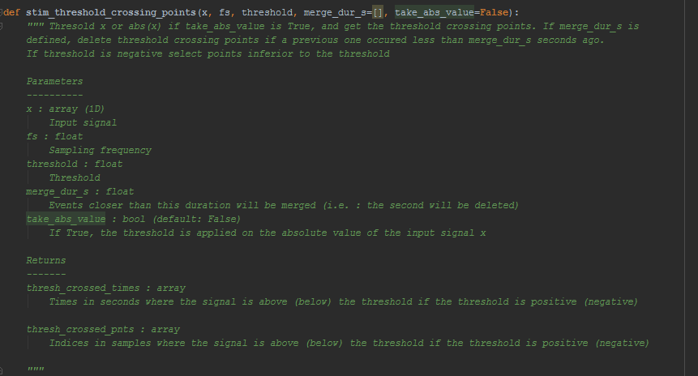
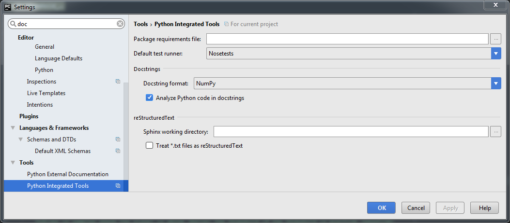
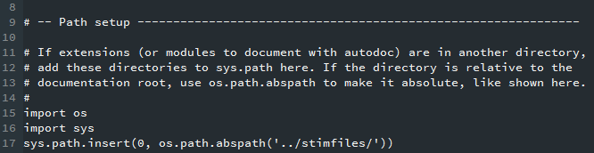

Add comments to your Python code
The documentation will be generated from the docstrings (~comments) added in your code.

In PyCharms, the docstring format can be selected (here NumPy) :

Sphinx
Install sphinx :
pip install Sphinx
Sphinx-quickstart :
Create a doc directory in your project root directory and launch sphinx_quickstart and follow the instructions :
mkdir doc
cd doc
sphinx-quickstart
You'll be asked for the Project name, Author name, and to enable or not some extensions. Enable autodoc when asked. You can also enable doctest, intersphinx, mathjax, viewcode and githubpages.
Once done, files conf.py, index.rst, make.bat, and Makefile are created
Sphinx autodoc:
The Sphinx autodoc extension (see https://docs-python2readthedocs.readthedocs.io/en/master/code-doc.html) converts docstrings from your Python code into the final documentation format at Sphinx build-time.
In the doc directory run the following command :
sphinx-apidoc -o rst/ ../$PROJECT_NAME
Where the directory ../$PROJECT_NAME contains your source code.
This will create .rst (reStructuredText) files for every python file. These .rst in the source directory do not containt the docstrings, but just directives on how to build the documentation.
Build the doc
Build the Makefile in the doc/ directory (e.g. for html output) :
make html
If you encounter this error :

It means sphinx could not locate the source (.py) files of your project. You need to indicate in the conf.py file in the doc/ directory, the location of the source directory. To do this uncomment and complete the first few lines of the conf.py file in the --- Path Setup --- part :
